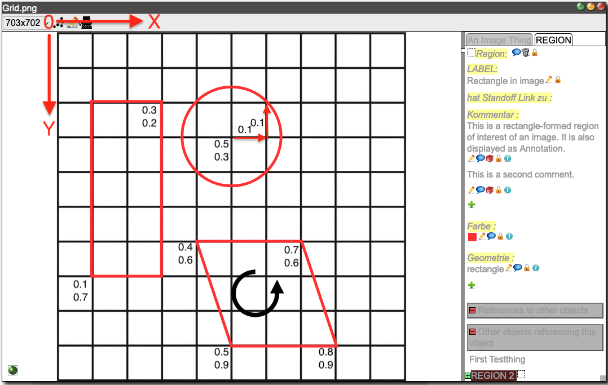

The XML file format for importing data
With the xmlupload command,
data can be imported into a DSP repository (on a DSP server) from an XML file. The import file is a
standard XML file as described on this page. After a successful upload of the data, an output file is written (called
id2iri_mapping_[timestamp].json) with the mapping from the internal IDs used inside the XML to their corresponding IRIs which
uniquely identify them inside DSP. This file should be kept if data is later added with the
--incremental option.
The import file must start with the standard XML header:
<?xml version='1.0' encoding='utf-8'?>
The root element <knora>
The <knora> element describes all resources that should be imported. It has the following attributes:
xmlns:"https://dasch.swiss/schema"(required)xmlns:xsi:"http://www.w3.org/2001/XMLSchema-instance"(required)xsi:schemaLocation:"https://dasch.swiss/schema https://raw.githubusercontent.com/dasch-swiss/dsp-tools/main/src/dsp_tools/resources/schema/data.xsd"( required)shortcode: project shortcode, e.g. "0801" (required)default-ontology: name of the ontology (required)
The <knora> element may look as follows:
<knora
xmlns="https://dasch.swiss/schema"
xmlns:xsi="http://www.w3.org/2001/XMLSchema-instance"
xsi:schemaLocation="https://dasch.swiss/schema https://raw.githubusercontent.com/dasch-swiss/dsp-tools/main/src/dsp_tools/resources/schema/data.xsd"
shortcode="0806"
default-ontology="webern">
...
</knora>
The <knora> element can only contain the following sub-elements:
<permissions>(optional)<resource>
The DSP permissions
The DSP server provides access control for every resource and every property.
Groups
The user doesn't hold the permissions directly, but belongs to an arbitrary number of groups which hold the permissions. There are built-in groups and project specific groups:
- Built-in groups: Every user is automatically in at least one of the following built-in groups:
UnknownUser: The user is not known to DSP (not logged in).KnownUser: The user is logged in, but not a member of the project the data element belongs to.ProjectMember: The user belongs to the same project as the data element.ProjectAdmin: The user is project administrator in the project the data element belongs to.Creator: The user is the owner of the element (created the element).SystemAdmin: The user is a system administrator.
- Project specific groups:
- can be defined in the JSON project file
Rights
A group can have exactly one of these rights:
- (no right): If no permission is defined for a certain group of users, these users cannot view any resources/values.
RVrestricted view permission: Same asV, but if it is applied to an image, the image is shown with a reduced resolution or with a watermark overlay.Vview permission: The user can view a resource or a value, but cannot modify it.Mmodify permission: The user can modify the element, but cannot mark it as deleted. The original resource or value will be preserved.Ddelete permission: The user is allowed to mark an element as deleted. The original resource or value will be preserved.CRchange right permission: The user can change the permission of a resource or value. The user is also allowed to permanently delete (erase) a resource.
Every right of this row includes all previous rights.
Defining permissions with the <permissions> element
The <permissions> element defines a permission ID that can subsequently be used in a
permissions attribute of a <resource> or <xyz-prop> tag.
It is optional to define permissions in the XML. If not defined, default permissions are applied, so that only project and system administrators can view and edit resources. All other users have no rights at all, not even view or restricted view permissions.
The <permissions> element defines which rights are given to which groups:
<permissions id="res-default">
<allow group="UnknownUser">RV</allow>
<allow group="KnownUser">V</allow>
<allow group="dsp-test:MlsEditors">D</allow>
</permissions>
In addition to the DSP built-in groups, project specific groups are supported as well.
A project specific group name has the form project-shortname:groupname.
If you don't want a group to have access at all, leave it out. In the following example, resources or properties with
permission special-permission can only be viewed by ProjectAdmins:
<permissions id="special-permission">
<allow group="ProjectAdmin">CR</allow>
</permissions>
Using permissions with the permissions attribute
Once defined, the permission IDs can be used as permissions attribute in the <resource> and <xyz-prop> tags. It is
important to note that a resource doesn't inherit its permissions to its properties. Each property must have its own
permissions. So, in the following example, the bitstreams don't inherit the permissions from their resource:
<resource ...>
<bitstream permissions="prop-default">images/EURUS015a.jpg</bitstream>
</resource>
<resource ...>
<bitstream permissions="prop-restricted">images/EURUS015a.jpg</bitstream>
</resource>
<resource ...>
<bitstream>images/EURUS015a.jpg</bitstream>
</resource>
To take as example KnownUser, i.e. a logged-in user who is not member of the project:
- With
permissions="prop-default", he hasVrights on the image: Normal view. - With
permissions="prop-restricted", he hasRVrights on the image: Blurred image. - With a blank
<bitstream>tag, he has no rights on the image: No view possible. Only users fromProjectAdminupwards are able to look at the image.
Describing resources with the <resource> element
A <resource> element contains all necessary information to create a resource. It has the following attributes:
label(required): a human-readable, preferably meaningful short name of the resourcerestype(required): the resource type as defined within the ontologyid(required): a unique, arbitrary string providing a unique ID to the resource in order to be referencable by other resources; the ID is only used during the import process and later replaced by the IRI used internally by DSPpermissions(optional, but if omitted, users who are lower than aProjectAdminhave no permissions at all, not even view rights): a reference to a permission IDiri(optional): a custom IRI, used when migrating existing resources (DaSCH-internal only)ark(optional): a version 0 ARK, used when migrating existing resources. It is not possible to useiriandarkin the same resource. Whenarkis used, it overridesiri(DaSCH-internal only).creation_date(optional): the creation date of the resource, used when migrating existing resources . It must be formatted according to the constraints of xsd:dateTimeStamp, which means that the timezone is required, e.g.:2005-10-23T13:45:12.502951+02:00(DaSCH-internal only)
A complete <resource> element may look as follows:
<resource label="EURUS015a"
restype=":Postcard"
id="238807"
permissions="res-def-perm">
...
</resource>
For every property that the ontology requires, the <resource> element contains one property
element (e.g. <integer-prop name="property_name>). The property element contains one or more values.
Example of a property element of type integer with two values:
<integer-prop name=":hasInteger">
<integer permissions="prop-default">4711</integer>
<integer permissions="prop-default">1</integer>
</integer-prop>
The following property elements exist:
<bitstream>: contains a path to a file (if the resource is a multimedia resource)<boolean-prop>: contains a boolean value<color-prop>: contains color values<date-prop>: contains date values<decimal-prop>: contains decimal values<geometry-prop>: contains JSON geometry definitions for a region<geoname-prop>: contains geonames.org location codes<list-prop>: contains list element labels<integer-prop>: contains integer values<interval-prop>: contains interval values<period-prop>: contains time period values (not yet implemented)<resptr-prop>: contains links to other resources<text-prop>: contains text values<time-prop>: contains time values<uri-prop>: contains URI values
<bitstream>
The <bitstream> element is used for bitstream data. It contains the path to a bitstream object like an image file, a
ZIP container, an audio file etc. It must only be used if the resource is a StillImageRepresentation, an
AudioRepresentation, a DocumentRepresentation etc.
Notes:
- There is only one
<bitstream>element allowed per representation. - The
<bitstream>element must be the first element. - By default, the path is relative to the working directory where
dsp-tools xmluploadis executed in. This behaviour can be modified with the flag--imgdir. If you keep the default, it is recommended to choose the project folder as working directory,my_projectin the example below:
my_project
├── files
│ ├── data_model.json
│ └── data_file.xml (<bitstream>images/dog.jpg</bitstream>)
└── images
├── dog.jpg
└── cat.jpg
my_project % dsp-tools xmlupload files/data_file.xml
Supported file extensions:
| Representation | Supported formats |
|---|---|
ArchiveRepresentation |
ZIP, TAR, GZ, Z, TAR.GZ, TGZ, GZIP, 7Z |
AudioRepresentation |
MP3, WAV |
DocumentRepresentation |
PDF, DOC, DOCX, XLS, XLSX, PPT, PPTX |
MovingImageRepresentation |
MP4 |
StillImageRepresentation |
JPG, JPEG, PNG, TIF, TIFF, JP2 |
TextRepresentation |
TXT, CSV, XML, XSL, XSD |
For more details, please consult the API docs.
Attributes:
permissions: Permission ID (optional, but if omitted, users who are lower than aProjectAdminhave no permissions at all, not even view rights)
Example of a public image inside a StillImageRepresentation:
<resource restype=":Image" id="image_1" label="image_1" permissions="res-default">
<bitstream permissions="prop-default">postcards/images/EURUS015a.jpg</bitstream>
</resource>
<boolean-prop>
The <boolean-prop> element is used for boolean values. It must contain exactly one <boolean> element.
Attributes:
name: name of the property as defined in the ontology (required)
<boolean>
The <boolean> element must contain the string "true" or "false", or the numeral 1 (true) or 0 (false).
Attributes:
permissions: Permission ID (optional, but if omitted, users who are lower than aProjectAdminhave no permissions at all, not even view rights)comment: a comment for this specific value (optional)
Example of a public and a hidden boolean property:
<boolean-prop name=":hasBoolean">
<boolean permissions="prop-default">true</boolean>
</boolean-prop>
<boolean-prop name=":hasHiddenBoolean">
<boolean>0</boolean>
</boolean-prop>
<color-prop>
The <color-prop> element is used for color values. It must contain at least one <color> element.
Attributes:
name: name of the property as defined in the ontology (required)
<color>
The <color> element is used to indicate a color value. The color has to be given in web-notation, that is a #
followed by 3 or 6 hex numerals.
Attributes:
permissions: Permission ID (optional, but if omitted, users who are lower than aProjectAdminhave no permissions at all, not even view rights)comment: a comment for this specific value (optional)
Example of a property with a public and a hidden color value:
<color-prop name=":hasColor">
<color permissions="prop-default">#00ff66</color>
<color>#ff00ff</color>
</color-prop>
<date-prop>
The <date-prop> element is used for date values. It must contain at least one <date> element.
Attributes:
name: name of the property as defined in the ontology (required)
<date>
the <date> element contains a DSP-specific date value. It has the following format:
calendar:epoch:yyyy-mm-dd:epoch:yyyy-mm-dd
calendar: either "JULIAN" or "GREGORIAN" (optional, default: GREGORIAN)epoch: either "BCE" or "CE" (optional, default CE)yyyy: year with four digits (required)mm: month with two digits (optional, e.g. 01, 02, ..., 12)dd: day with two digits (optional, e.g. 01, 02, ..., 31)
Notes:
- If the day is omitted, then the precision is month, if also the month is omitted, the precision is year.
- Internally, a date is always represented as a start and end date.
- If start and end date match, it's an exact date.
- If start and end date don't match, it's a range.
- If the end date is omitted, it's a range from the earliest possible beginning of the start date to the latest possible
end of the start date. For example:
- "1893" will be expanded to a range from January 1st 1893 to December 31st 1893.
- "1893-01" will be expanded to a range from January 1st 1893 to January 31st 1893.
- "1893-01-01" will be expanded to the exact date January 1st 1893 to January 1st 1893 (technically also a range).
Attributes:
permissions: Permission ID (optional, but if omitted, users who are lower than aProjectAdminhave no permissions at all, not even view rights)comment: a comment for this specific value (optional)
Example of a property with a public and a hidden date value:
<date-prop name=":hasDate">
<date permissions="prop-default">GREGORIAN:CE:2014-01-31</date>
<date>GREGORIAN:CE:1930-09-02:CE:1930-09-03</date>
</date-prop>
<decimal-prop>
The <decimal-prop> element is used for decimal values. It must contain at least one <decimal> element.
Attributes:
name: name of the property as defined in the ontology (required)
<decimal>
The <decimal> element contains a decimal number.
Attributes:
permissions: Permission ID (optional, but if omitted, users who are lower than aProjectAdminhave no permissions at all, not even view rights)comment: a comment for this specific value (optional)
Example of a property with a public and a hidden decimal value:
<decimal-prop name=":hasDecimal">
<decimal permissions="prop-default">3.14159</decimal>
<decimal>2.71828</decimal>
</decimal-prop>
<geometry-prop>
The <geometry-prop> element is used for a geometric definition of a 2-D region (e.g. a region on an image). It must
contain at least one <geometry> element. A <geometry-prop> can only be used inside a <region> tag.
Attributes:
name: the only allowed name ishasGeometry, because this property is a DSP base property that can only be used in the<region>tag.
<geometry>
A geometry value is defined as a JSON object. It contains the following data:
status: "active" or "deleted"type: "circle", "rectangle" or "polygon" (only the rectangle can be displayed in DSP-APP. The others can be looked at in another frontend, e.g. in TANGOH.)lineColor: web-colorlineWidth: integer number (in pixels)points: array of coordinate objects of the form{"x": decimal, "y": decimal}radius: coordinate object of the form{"x": decimal, "y": decimal}- In the SALSAH data, there is also a key named
original_indexin the JSON format of all three shapes, but it doesn't seem to have an influence on the shapes that TANGOH displays, so it can be omitted.
Attributes:
permissions: Permission ID (optional, but if omitted, users who are lower than aProjectAdminhave no permissions at all, not even view rights)comment: a comment for this specific value (optional)
Example:
<geometry-prop name="hasGeometry">
<geometry permissions="prop-default">
{
"status": "active",
"type": "rectangle",
"lineColor": "#ff1100",
"lineWidth": 5,
"points": [
{"x":0.1,"y":0.7},
{"x":0.3,"y":0.2}
]
}
</geometry>
<geometry permissions="prop-default">
{
"status": "active",
"type": "circle",
"lineColor": "#ff1100",
"lineWidth": 5,
"points": [{"x":0.5,"y":0.3}],
"radius": {"x":0.1,"y":0.1} // vector (0.1, 0.1)
}
</geometry>
<geometry permissions="prop-default">
{
"status": "active",
"type": "polygon",
"lineColor": "#ff1100",
"lineWidth": 5,
"points": [{"x": 0.4, "y": 0.6},
{"x": 0.5, "y": 0.9},
{"x": 0.8, "y": 0.9},
{"x": 0.7, "y": 0.6}]
}
</geometry>
</geometry-prop>
The underlying grid is a 0-1 normalized top left-anchored grid. The following coordinate system shows the three shapes
that were defined above:

<geoname-prop>
The <geoname-prop> element is used for values that contain a geonames.org ID. It must contain
at least one <geoname> element.
Attributes:
name: name of the property as defined in the ontology (required)
<geoname>
Contains a valid geonames.org ID.
Attributes:
permissions: Permission ID (optional, but if omitted, users who are lower than aProjectAdminhave no permissions at all, not even view rights)comment: a comment for this specific value (optional)
Example of a property with a public link to Vienna and a hidden link to Basel:
<geoname-prop name=":hasLocation">
<geoname permissions="prop-default">2761369</geoname>
<geoname>2661604</geoname>
</geoname-prop>
<integer-prop>
The <integer-prop> element is used for integer values. It must contain at least one <integer> element.
Attributes:
name: name of the property as defined in the ontology (required)
<integer>
The <integer> element contains an integer value.
Attributes:
permissions: Permission ID (optional, but if omitted, users who are lower than aProjectAdminhave no permissions at all, not even view rights)comment: a comment for this specific value (optional)
Example of a property with a public and a hidden integer value:
<integer-prop name=":hasInteger">
<integer permissions="prop-default">4711</integer>
<integer>1</integer>
</integer-prop>
<interval-prop>
The <interval-prop> element is used for intervals with a start and an end point on a timeline, e.g. relative to the beginning of an audio or video file.
An <interval-prop> must contain at least one <interval> element.
Attributes:
name: name of the property as defined in the ontology (required)
<interval>
A time interval is represented by plain decimal numbers (=seconds), without a special notation for minutes and hours.
The <interval> element contains two decimals separated by a colon (:). The places before the decimal point are
seconds, and the places after the decimal points are fractions of a second.
Attributes:
permissions: Permission ID (optional, but if omitted, users who are lower than aProjectAdminhave no permissions at all, not even view rights)comment: a comment for this specific value (optional)
Example of a property with a public and a hidden interval value:
<interval-prop name=":hasInterval">
<interval permissions="prop-default">60.5:120.5</interval> <!-- 0:01:00.5 - 0:02:00.5 -->
<interval>61:3600</interval> <!-- 0:01:01 - 1:00:00 -->
</interval-prop>
<list-prop>
The <list-prop> element is used as entry point into a list (list node). List nodes are identified by their name
attribute that was given when creating the list nodes (which must be unique within each list!). It must contain at least
one <list> element.
Attributes:
name: name of the property as defined in the ontology (required)list: name of the list as defined in the ontology (required)
<list>
The <list> element references a node in a (pull-down or hierarchical) list.
Attributes:
permissions: Permission ID (optional, but if omitted, users who are lower than aProjectAdminhave no permissions at all, not even view rights)comment: a comment for this specific value (optional)
Example of a property with a public and a hidden list value:
<list-prop list="category" name=":hasCategory">
<list permissions="prop-default">physics</list>
<list>nature</list>
</list-prop>
<resptr-prop>
The <resptr-prop> element is used to link other resources within DSP. It must contain at least one <resptr> element.
Attributes:
name: name of the property as defined in the ontology (required)
<resptr>
The <resptr> element contains either the internal ID of another resource inside the XML or the IRI of an already
existing resource on DSP. Inside the same XML file, a mixture of the two is not possible. If referencing existing
resources, xmlupload --incremental has to be used.
Attributes:
permissions: Permission ID (optional, but if omitted, users who are lower than aProjectAdminhave no permissions at all, not even view rights)comment: a comment for this specific value (optional)
Example of a property with a public link to <resource id="res_1" ...> and a hidden link to and <resource id="res_2" ...>:
<resptr-prop name=":hasReferenceTo">
<resptr permissions="prop-default">res_1</resptr>
<resptr>res_2</resptr>
</resptr-prop>
<text-prop>
The <text-prop> element is used for text values. It must contain at least one <text> element.
Attributes:
name: name of the property as defined in the ontology (required)
<text>
The <text> element has the following attributes:
encoding(required)utf8: simple text without markupxml: complex text with markup. It must follow the XML format as defined by the DSP standard mapping.
permissions: Permission ID (optional, but if omitted, users who are lower than aProjectAdminhave no permissions at all, not even view rights)comment: a comment for this specific value (optional)
Example of a public and a hidden text:
<text-prop name=":hasDescription">
<text encoding="xml" permissions="prop-default">Probe bei "Wimberger". Lokal in Wien?</text>
<text encoding="xml">
<strong>Bold text</strong> and a <a class="salsah-link" href="IRI:obj_0003:IRI">link to an ID</a>.<br/>
And a <a class="salsah-link" href="http://rdfh.ch/4123/nyOODvYySV2nJ5RWRdmOdQ">link to an IRI</a>.
</text>
</text-prop>
The second text above contains a link to the resource obj_0003, which is defined in the same XML file. It also
contains a link to the resource http://rdfh.ch/4123/nyOODvYySV2nJ5RWRdmOdQ, which already exists on the DSP server.
encoding and gui_element
encoding can be combined with
gui_element (defined in the ontology)
as follows:
gui_element(JSON ontology) |
encoding(XML data) |
How DSP-APP renders the whitespaces |
|---|---|---|
SimpleText |
utf8 |
Pretty-print whitespaces and newlines from the XML are taken into the text field as they are. |
Textarea |
utf8 |
Pretty-print whitespaces and newlines from the XML are taken into the text field as they are. |
Richtext |
xml |
Pretty-print whitespaces and newlines from the XML are removed. If you want a newline in the text field, use <br /> instead. |
Special characters: Overview
Depending on the encoding of your text, special characters behave differently. There are two places where this must be taken into account:
- When a string is passed to
excel2xml.make_text_prop() - When a string is written by hand into an XML file
In the tables below, the second column is the output of the first column, and the third column is how DSP-APP displays the second column.
Behaviour of simple text (SimpleText/Textarea + utf8):
input to excel2xml |
XML file | DSP-APP | Remarks |
|---|---|---|---|
< |
< |
< | |
> |
> |
> | |
< |
⛔ | invalid XML | |
> |
> | discouraged by XML standard, but possible | |
& |
& |
& | |
& |
⛔ | invalid XML | |
> |
⛔ | discouraged: The leading & will be escaped |
|
<tag> |
⛔ | discouraged: Simple text is not rich text | |
<tag> |
⛔ | forbidden: Simple text is not rich text |
Behaviour of text with markup (Richtext + xml):
input to excel2xml |
XML file | DSP-APP | Remarks |
|---|---|---|---|
< |
⛔ | invalid XML | |
> |
> |
> | discouraged by XML standard, but possible |
< |
⛔ | invalid XML | |
> |
> | discouraged by XML standard, but possible | |
< |
< |
< | |
> |
> |
> | |
& |
⛔ | invalid XML | |
& |
⛔ | invalid XML | |
& |
& |
& | |
<em>text</em> |
<em>text</em> |
text | |
unclosed <tag> text |
⛔ | invalid XML | |
<not a tag> |
<not a tag> |
Special characters: Rules
From the systematic analysis above, the following rules can be derived:
For input of excel2xml:
- Simple text: Don't use HTML escape sequences.
- Simple text: Don't use tags. (Mathematical comparisons with
<>are allowed). - Rich text: The special characters
<,>and&are only allowed to construct a tag. - Rich text: If tags are used, they must result in well-formed XML.
- Rich text: HTML escape sequences can be freely used.
If you write an XML file by hand:
- Simple text: The special characters
<,>and&must be escaped. - Simple text: Don't use tags. (Mathematical comparisons with
<>are allowed). - Rich text: The special characters
<,>and&must be escaped if they are not part of a valid HTML tag.
<time-prop>
The <time-prop> element is used for time values in the Gregorian calendar. It must contain at least one <time> element.
Attributes:
name: name of the property as defined in the ontology (required)
<time>
The <time> element represents an exact datetime value in the form xsd:dateTimeStamp,
which is defined as yyyy-mm-ddThh:mm:ss.sssssssssssszzzzzz. The following abbreviations describe this form:
yyyy: a four-digit numeral that represents the year. The value cannot start with a minus (-) or a plus (+) sign. 0001 is the lexical representation of the year 1 of the Common Era (also known as 1 AD). The value cannot be 0000. The calendar is always the Gregorian calendar.mm: a two-digit numeral that represents the monthdd: a two-digit numeral that represents the dayhh: a two-digit numeral representing the hours. Must be between 0 and 23mm: a two-digit numeral that represents the minutesss: a two-digit numeral that represents the secondsssssssssssss: If present, a 1-to-12-digit numeral that represents the fractional seconds (optional)zzzzzz: represents the time zone (required).
Each part of the datetime value that is expressed as a numeric value is constrained to the maximum value within the interval that is determined by the next higher part of the datetime value. For example, the day value can never be 32 and cannot be 29 for month 02 and year 2002 (February 2002).
The timezone is defined as follows:
- A plus (+) or minus (-) sign that is followed by hh:mm:
+: Indicates that the specified time instant is in a time zone that is ahead of the UTC time by hh hours and mm minutes.-: Indicates that the specified time instant is in a time zone that is behind UTC time by hh hours and mm minutes.hh: a two-digit numeral (with leading zeros as required) that represents the hours. The value must be between -14 and +14, inclusive.mm: a two-digit numeral that represents the minutes. The value must be zero when hh is equal to 14.
- Z: The literal Z, which represents the time in UTC (Z represents Zulu time, which is equivalent to UTC). Specifying Z for the time zone is equivalent to specifying +00:00 or -00:00.
Attributes:
permissions: Permission ID (optional, but if omitted, users who are lower than aProjectAdminhave no permissions at all, not even view rights)comment: a comment for this specific value (optional)
Example of a property with a public and a hidden time value:
<time-prop name=":hasTime">
<time permissions="prop-default">2019-10-23T13:45:12Z</time>
<time>2009-10-10T12:00:00-05:00</time>
</time-prop>
<uri-prop>
The <uri-prop> represents a Uniform Resource Identifier.
It must contain at least one <uri> element.
Attributes:
name: name of the property as defined in the ontology (required)
<uri>
The <uri> element contains a syntactically valid URI.
Attributes:
permissions: Permission ID (optional, but if omitted, users who are lower than aProjectAdminhave no permissions at all, not even view rights)comment: a comment for this specific value (optional)
Example of a property with a public and a hidden URI:
<uri-prop name=":hasURI">
<uri permissions="prop-default">http://www.groove-t-gang.ch</uri>
<uri>http://dasch.swiss</uri>
</uri-prop>
DSP base resources and base properties to be used directly in the XML file
There is a number of base resources and base properties that must not be subclassed in a project ontology. They are
directly available in the XML data file. Please have in mind that built-in names of the knora-base ontology must be used
without prepended colon.
See also the related part of the JSON project documentation
<annotation>
<annotation> is an annotation to another resource of any class. It must have the following predefined properties:
hasComment(1-n)isAnnotationOf(1)
Example:
<annotation label="Annotation to another resource" id="annotation_0" permissions="res-default">
<text-prop name="hasComment">
<text encoding="utf8" permissions="prop-default">This is an annotation to a resource.</text>
</text-prop>
<resptr-prop name="isAnnotationOf">
<resptr permissions="prop-default">img_1</resptr>
</resptr-prop>
</annotation>
Technical note: An <annotation> is in fact a <resource restype="Annotation">. But it is mandatory to use the
shortcut, so that the XML file can be validated more precisely.
<region>
A <region> resource defines a region of interest (ROI) in an image. It must have the following predefined properties:
hasColor(1)isRegionOf(1)hasGeometry(1)hasComment(1-n)
Example:
<region label="Rectangle in image" id="region_0" permissions="res-default">
<color-prop name="hasColor">
<color permissions="prop-default">#5d1f1e</color>
</color-prop>
<resptr-prop name="isRegionOf">
<resptr permissions="prop-default">img_1</resptr>
</resptr-prop>
<geometry-prop name="hasGeometry">
<geometry permissions="prop-default">
{
"status": "active",
"type": "rectangle",
"lineColor": "#ff1100",
"lineWidth": 5,
"points": [
{"x":0.1,"y":0.7},
{"x":0.3,"y":0.2}
]
}
</geometry>
</geometry-prop>
<text-prop name="hasComment">
<text encoding="utf8" permissions="prop-default">This is a rectangle-formed region of interest.</text>
</text-prop>
</region>
More details about the <geometry-prop> are documented here.
Technical note: A <region> is in fact a <resource restype="Region">. But it is mandatory to use the
shortcut, so that the XML file can be validated more precisely.
<link>
<link> is a resource linking together several other resources of different classes. It must have the following
predefined properties:
hasComment(1-n)hasLinkTo(1-n)
Example:
<link label="Link between three resources" id="link_obj_0" permissions="res-default">
<text-prop name="hasComment">
<text permissions="prop-default" encoding="utf8">
A link object can link together an arbitrary number of resources from any resource class.
</text>
</text-prop>
<resptr-prop name="hasLinkTo">
<resptr permissions="prop-default">doc_001</resptr>
<resptr permissions="prop-default">img_obj_5</resptr>
<resptr permissions="prop-default">audio_obj_0</resptr>
</resptr-prop>
</link>
Technical note: A <link> is in fact a <resource restype="LinkObj">. But it is mandatory to use the
shortcut, so that the XML file can be validated more precisely.
Complete example
DaSCH provides you with two example repositories that contain everything which is necessary to create a project and upload data. Both of them also contain an XML data file. You can find them here:
- https://github.com/dasch-swiss/00A1-import-scripts
- https://github.com/dasch-swiss/082E-rosetta-scripts
In addition, there is another complete example of an XML data file here:
<?xml version='1.0' encoding='utf-8'?>
<knora
xmlns="https://dasch.swiss/schema"
xmlns:xsi="http://www.w3.org/2001/XMLSchema-instance"
xsi:schemaLocation="https://dasch.swiss/schema https://raw.githubusercontent.com/dasch-swiss/dsp-tools/main/src/dsp_tools/resources/schema/data.xsd"
shortcode="0001"
default-ontology="anything">
<!-- permissions: see https://docs.dasch.swiss/latest/DSP-API/02-knora-ontologies/knora-base/#permissions -->
<permissions id="res-default">
<allow group="UnknownUser">V</allow>
<allow group="KnownUser">V</allow>
<allow group="Creator">CR</allow>
<allow group="ProjectAdmin">CR</allow>
<allow group="anything:Thing searcher">D</allow>
</permissions>
<permissions id="res-restricted">
<allow group="UnknownUser">RV</allow>
<allow group="KnownUser">V</allow>
<allow group="Creator">CR</allow>
<allow group="ProjectAdmin">CR</allow>
<allow group="anything:Thing searcher">M</allow>
</permissions>
<permissions id="prop-default">
<allow group="UnknownUser">V</allow>
<allow group="KnownUser">V</allow>
<allow group="Creator">CR</allow>
<allow group="ProjectAdmin">CR</allow>
<allow group="anything:Thing searcher">D</allow>
</permissions>
<permissions id="prop-restricted">
<allow group="UnknownUser">RV</allow>
<allow group="KnownUser">V</allow>
<allow group="Creator">CR</allow>
<allow group="ProjectAdmin">CR</allow>
<allow group="anything:Thing searcher">M</allow>
</permissions>
<resource label="obj_inst1"
restype=":BlueThing"
id="obj_0001"
permissions="res-default">
<list-prop list="treelistroot" name=":hasListItem">
<list permissions="prop-default">Tree list node 02</list>
</list-prop>
<list-prop list="treelistroot" name=":hasOtherListItem">
<list permissions="prop-default">Tree list node 03</list>
</list-prop>
<text-prop name=":hasRichtext">
<text permissions="prop-default" encoding="xml" >The <strong>third</strong> object and a <a class="salsah-link" href="IRI:obj_0003:IRI">link</a> to.</text>
</text-prop>
<text-prop name=":hasRichtext">
<text permissions="prop-default" encoding="xml" >The <strong>third</strong> object and a <a class="salsah-link" href="IRI:obj_0003:IRI">link</a> to.</text>
</text-prop>
<text-prop name=":hasText">
<text permissions="prop-default" encoding="utf8">Dies ist ein einfacher Text ohne Markup</text>
<text permissions="prop-restricted" encoding="utf8">Nochmals ein einfacher Text</text>
</text-prop>
<date-prop name=":hasDate">
<date permissions="prop-default">JULIAN:CE:1401-05-17:CE:1402-01</date>
</date-prop>
<integer-prop name=":hasInteger">
<integer permissions="prop-default">4711</integer>
</integer-prop>
<decimal-prop name=":hasDecimal">
<decimal permissions="prop-default" comment="Eulersche Zahl">2.718281828459</decimal>
</decimal-prop>
<boolean-prop name=":hasBoolean">
<boolean permissions="prop-default">true</boolean>
</boolean-prop>
<uri-prop name=":hasUri">
<uri permissions="prop-default">http://dasch.swiss/gaga</uri>
</uri-prop>
<interval-prop name=":hasInterval">
<interval permissions="prop-default">12.5:14.2</interval>
</interval-prop>
<color-prop name=":hasColor">
<color permissions="prop-default">#00ff00</color>
</color-prop>
<geoname-prop name=":hasGeoname">
<geoname permissions="prop-default" comment="A sacred place for railroad fans">5416656</geoname>
</geoname-prop>
<resptr-prop name=":hasBlueThing">
<resptr permissions="prop-default">obj_0002</resptr>
</resptr-prop>
</resource>
<resource label="obj_inst2"
restype=":BlueThing"
id="obj_0002"
permissions="res-default">
<list-prop list="treelistroot" name=":hasListItem">
<list permissions="prop-default">Tree list node 10</list>
</list-prop>
<list-prop list="treelistroot" name=":hasOtherListItem">
<list permissions="prop-default">Tree list node 11</list>
</list-prop>
<text-prop name=":hasRichtext">
<text permissions="prop-default" encoding="xml">What is this <em>bold</em> thing?</text>
</text-prop>
<text-prop name=":hasText">
<text permissions="prop-default" encoding="utf8">aa bbb cccc ddddd</text>
</text-prop>
<date-prop name=":hasDate">
<date permissions="prop-default">1888</date>
</date-prop>
<integer-prop name=":hasInteger">
<integer permissions="prop-default">42</integer>
</integer-prop>
<decimal-prop name=":hasDecimal">
<decimal permissions="prop-default" comment="Die Zahl PI">3.14159</decimal>
</decimal-prop>
<boolean-prop name=":hasBoolean">
<boolean permissions="prop-default">false</boolean>
</boolean-prop>
<uri-prop name=":hasUri">
<uri permissions="prop-default">http://unibas.ch/gugus</uri>
</uri-prop>
<interval-prop name=":hasInterval">
<interval permissions="prop-default">24:100.075</interval>
</interval-prop>
<color-prop name=":hasColor">
<color permissions="prop-default">#33ff77</color>
</color-prop>
<geoname-prop name=":hasGeoname">
<geoname permissions="prop-default" comment="A sacred place for railroad fans">5416656</geoname>
</geoname-prop>
<resptr-prop name=":hasBlueThing">
<resptr permissions="prop-default">obj_0003</resptr>
</resptr-prop>
</resource>
<resource label="obj_inst3"
restype=":BlueThing"
id="obj_0003"
permissions="res-default">
<list-prop list="treelistroot" name=":hasListItem">
<list permissions="prop-default">Tree list node 01</list>
</list-prop>
<list-prop list="treelistroot" name=":hasOtherListItem">
<list permissions="prop-default">Tree list node 02</list>
</list-prop>
<text-prop name=":hasRichtext">
<text permissions="prop-default" encoding="xml">This is <em>bold and <strong>strong</strong></em> text!</text>
</text-prop>
<text-prop name=":hasText">
<text permissions="prop-default" encoding="utf8">aa bbb cccc ddddd</text>
</text-prop>
<date-prop name=":hasDate">
<date permissions="prop-default">1888</date>
</date-prop>
<integer-prop name=":hasInteger">
<integer permissions="prop-default">42</integer>
</integer-prop>
<decimal-prop name=":hasDecimal">
<decimal permissions="prop-default" comment="Die Zahl PI">3.14159</decimal>
</decimal-prop>
<boolean-prop name=":hasBoolean">
<boolean permissions="prop-default">false</boolean>
</boolean-prop>
<uri-prop name=":hasUri">
<uri permissions="prop-default">http://unibas.ch/gugus</uri>
</uri-prop>
<interval-prop name=":hasInterval">
<interval permissions="prop-default">24:100.075</interval>
</interval-prop>
<color-prop name=":hasColor">
<color permissions="prop-default">#33ff77</color>
</color-prop>
<geoname-prop name=":hasGeoname">
<geoname permissions="prop-default" comment="A sacred place for railroad fans">5416656</geoname>
</geoname-prop>
</resource>
<resource label="obj_inst4"
restype=":ThingPicture"
id="obj_0004"
permissions="res-default">
<bitstream>gaga.tif</bitstream>
<text-prop name=":hasPictureTitle">
<text permissions="prop-default" encoding="utf8">This is the famous Lena</text>
</text-prop>
</resource>
</knora>